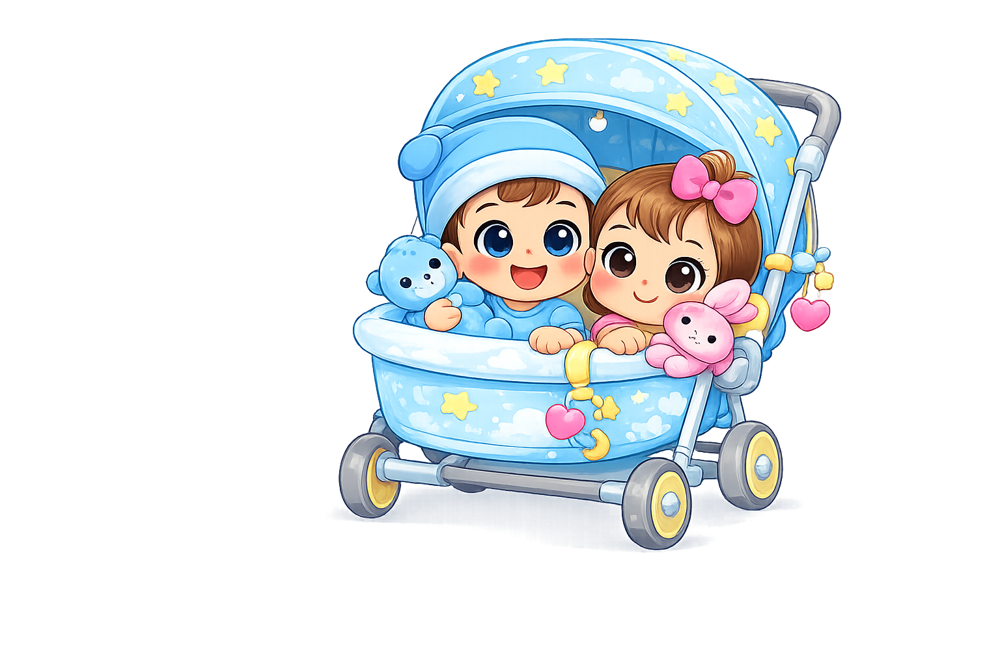

Volvemos muy pronto
Estamos mejorando la tienda para cuidarte mejor a ti y a tu bebé.
📌 El botón usa el número configurado en config.js → empresa.whatsapp.

Estamos mejorando la tienda para cuidarte mejor a ti y a tu bebé.
📌 El botón usa el número configurado en config.js → empresa.whatsapp.